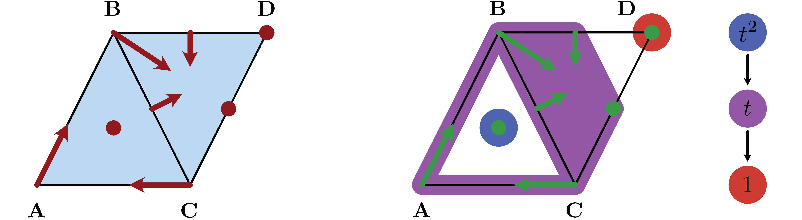

Tutorial
This tutorial explains the basic usage of the main components of ConleyDynamics.jl. It is not meant to be exhaustive, and more details will be provided in the more indiviualized sections. Also, precise mathematical definitions will be delayed until then. The presented examples are taken from the papers [BKMW20] and [MW23], with minor modifications.
Creating Simplicial Complexes
The fundamental mathematical object for ConleyDynamics.jl is a Lefschetz complex [Lef42]. For now we note that both simplicial complexes and cubical complexes are special cases, and ConleyDynamics.jl provides convenient interfaces for generating them.
For the sake of simplicity, this tutorial only considers the case of a simplicial complex. Recall that an abstract simplicial complex $K$ is just a collection of finite sets, called simplices, which is closed under taking subsets. In other words, every subset of a simplex is again a simplex. Each simplex $\sigma$ has an associated dimension $\dim\sigma$, which is one less than the number of its elements. One usually calls simplices of dimension 0 vertices, edges have dimension 1, and simplices of dimension 2 are triangles. It follows easily from these definitions that every simplex is the union of its vertices. The following notions associated with simplicial complexes are important for this introduction:
- A face of a simplex is any of its subsets. Notice that every simplex is a face of itself, and it is the only face that has the same dimension as the simplex. Faces whose dimension is strictly smaller are referrred to as proper faces.
- The boundary of a simplex $\sigma$ is the collection of all proper faces of $\sigma$. For a triangle, this amounts to all three edges and all three vertices which are part of it.
- A facet of a simplex $\sigma$ is any face $\tau$ with dimension $\dim\tau = \dim\sigma - 1$. Notice that the facets of a simplex are the faces in its boundary of maximal dimension.
- The closure of a subset $K_0$ of a simplicial complex $K$ consists of the collection of all faces of simplices in $K_0$, and we denote the closure by $\mathrm{cl}\, K_0$.
- A subset $K_0$ of a simplicial complex $K$ is called closed, if it equals its closure. In other words, $K_0$ is closed if and only if for every simplex $\sigma$ in $K_0$ all of its boundary simplices are part of $K_0$ as well. Thus, a closed subset of a simplicial complex is a simplicial complex in its own right.
In ConleyDynamics.jl it is easy to generate a simplicial complex. This requires two objects:
- The vertices are described by a vector
labelsof string labels for the vertices of the simplicial complex. Thus, the length of the vector equals the number of vertices, and the k-th entry is the label for the k-th vertex. - In addition, a second vector
simpliceshas to describe enough simplices so that the simplicial complex is determined. This object is a vector of vectors, and the vectorsimplices[k]describes the index values of all the vertices in the k-th simplex. These indices are precisely the corresponding locations of the vertices inlabels.
It is also possible to specify the list of simplices using a Vector{Vector{String}}, i.e., as a vector of string vectors. In this case, the entry simplices[k] is a list of the labels of the vertices.
It is expected that the labels in labels all have the same number of characters. This is due to the fact that when creating the simplicial complex, ConleyDynamics.jl automatically creates labels for each of the simplices in $K$, by concatenating the vertex labels. Not using a fixed label size could lead to ambiguities, and will therefore raise an error message.

The following first example creates a simple simplicial complex. The complex is shown in the above figure, and it has six vertices which we label by the first six letters.
labels = ["A","B","C","D","E","F"]
simplices = [["A","B"],["A","C"],["B","C"],["B","D"],["D","E","F"]]
sc = create_simplicial_complex(labels,simplices)
fieldnames(typeof(sc))(:ncells, :dim, :boundary, :labels, :indices, :dimensions)Based on the simplex specifications, the generated simplicial complex $K$ consists of three edges connecting each of the vertices A, B, and C, a two-dimensional triangle DEF, as well as the edge BD which connects the triangle boundary and the filled triangle. The created struct sc is of type LefschetzComplex, with fieldnames as indicated in the above output. The number of cells in the complex can be seen as follows:
println(sc.ncells)14Note that the final simplicial complex has a total of seven edges, since also the edges of DEF are part of the simplicial complex. They are automatically generated by create_simplicial_complex. The dimension of $K$ is the largest simplex dimensions, and can be recalled via
println(sc.dim)2The sc struct contains a vector of labels, which in this case takes the form
println(sc.labels)["A", "B", "C", "D", "E", "F", "AB", "AC", "BC", "BD", "DE", "DF", "EF", "DEF"]Finally, the Lefschetz complex data structure for our simplicial complex $K$ includes the dimensions for the corresponding cells in the integer vector sc.dimensions, a dictionary sc.indices which associates each simplex label with its integer index, and the boundary map sc.boundary which will be described in more detail in Lefschetz Complexes. The latter map is internally stored as a sparse matrix over either a finite field or over the rationals. See also the discussion of Sparse Matrices.
Computing Homology and Persistence
Any simplicial complex, and in fact any Lefschetz complex, has an associated homology. Informally, homology describes the connectivity structure of the simplicial complex. More precisely, the homology consists of a sequence of integers, called the Betti numbers, which are indexed by dimension. There are Betti numbers $\beta_k(K)$ for every $k = 0,\ldots,\dim K$. The zero-dimensional Betti number $\beta_0(K)$ gives the number of connected components of $K$, while $\beta_1(K)$ counts the number of independent loops that can be found in $K$. Finally, $\beta_2(K)$ equals the number of cavities. In our case, we have
homology(sc)3-element Vector{Int64}:
1
1
0This means that the simplicial complex $K$ has one component, as well as one loop, and no cavities. The function homology returns a vector of integers, whose k-th entry is $\beta_{k-1}(K)$. We would like to point out that in ConleyDynamics.jl all homology computations are performed over fields, and therefore homology is completely described by the Betti numbers. Two types of fields are supported, and they are selected by the characteristic p in the sparse boundary matrix:
- If
p=0, then the homology computation uses the field of rational numbers. - For any prime number
p, homology is determined over the finite field $GF(p)$ withpelements.
ConleyDynamics.jl also allows for the computation of relative homology. In the case of relative homology, together with the simplicial complex $K$ one has to specify a closed subcomplex $K_0$. Intuitively, the relative homology $H_*(K,K_0)$ is the homology of a new space, which is obtained from $K$ by identifying $K_0$ to a single point, and then decreasing the zero-dimensional Betti number by 1. Consider for example the following command:
relative_homology(sc, [1,6])3-element Vector{Int64}:
0
2
0In this case, the subcomplex $K_0$ consists of the two vertices A and F, which are therefore glued together. This leads to zero Betti numbers in dimension 0 and 2 (remember that the zero-dimensional Betti number is decreased by 1!), and a one-dimensional Betti number of 2. The latter is increased by one since we obtain a second loop by moving from A to F = A along the edges AB, BD, and DF. Another example is the following:
relative_homology(sc, ["DE","DF","EF"])3-element Vector{Int64}:
0
1
1Now the subcomplex $K_0$ consists of the edges DE, DF, and EF – together with the three vertices D, E, and F which are automatically added by relative_homology. Identifying them all to one point creates a hollow two-dimensional sphere, and the relative Betti numbers reflect that fact.
As the above two examples demonstrate, the subcomplex can be specified either as a list of simplex indices, or through the simplex labels. Moreover, the specfied subspace simplex list is automatically extended by relative_homology to include all simplex faces, i.e., it computes the simplicial closure to arrive at a closed subcomplex. Finally, note that the subcomplex can be empty:
relative_homology(sc, [])3-element Vector{Int64}:
1
1
0As expected, in this case one obtains the standard homology of sc.
In addition to regular and relative homology, ConleyDynamics.jl can also compute persistent homology. For this, one has to specify a filtration of closed Lefschetz complexes
\[ K_1 \subset K_2 \subset \ldots \subset K_m .\]
Persistent homology tracks the appearance and disappearance (also often called the birth and death) of topological features as one moves through the complexes in the filtration. In ConleyDynamics.jl, one can specify a Lefschetz complex filtration by assigning the integer $k$ to each simplex that first appears in $K_k$. Moreover, it is expected that $K_m = K$. Then the persistent homology is computed via the following command:
filtration = [1,1,1,2,2,2,1,1,1,3,2,2,2,4]
phsingles, phpairs = persistent_homology(sc, filtration)([[1], [1], Int64[]], [[(2, 3)], [(2, 4)], Tuple{Int64, Int64}[]])The function returns the persistence intervals, which give the birth and death indices of each topological feature in each dimension. There are two types of intervals:
- Intervals of the form $[a,\infty)$ correspond to topological features that first appear in $K_a$ and are still present in the final complex. The starting indices of such features in dimension
kare contained in the listphsingles[k+1]. - Intervals of the form $[a,b)$ correspond to topological features that first appear in $K_a$ and first disappear in $K_b$. The corresponding pairs
(a,b)in dimensionkare contained in the listphpairs[k+1].
In our above example, one observes intervals $[1,\infty)$ in dimensions zero and one – and these correspond to a connected component and the loop generated by the edges AB, AC, and BC. These appear first in $K_1$ and are still present in $K_4$. The interval $[2,3)$ in dimension zero represents the new component created by $K_2$, and it disappears through merging with the older component from $K_1$ when the edge BD is introduced with $K_3$. Similarly, the interval $[2,4)$ in dimension one is the loop created by the triangle DE, DF, and EF in $K_2$, which disappears with the introduction of the triangle DEF in $K_4$. Note that the interval death times respect the elder rule: When for example a component disappears through merging, the younger interval gets killed, and the older one continues to live. Similarly in higher dimensions.
Forman Vector Fields
The main focus of ConleyDynamics.jl is on the study of combinatorial topological dynamics on Lefschetz complexes. While the phase space as Lefschetz complex has been discussed above, albeit only for the special case of a simplicial complex, the dynamics part can be given in the simplest form by a combinatorial vector field, also called a Forman vector field [For98a, For98b]. We will soon see that such vector fields are a more restrictive version of multivector fields, but they are easier to start with. The following command defines a simple Forman vector field on our sample simplicial complex $K$ from above:
formanvf = [["A","AC"],["B","AB"],["C","BC"],["D","BD"],["E","DE"]]5-element Vector{Vector{String}}:
["A", "AC"]
["B", "AB"]
["C", "BC"]
["D", "BD"]
["E", "DE"]The Forman vector field formanvf is viualized in the accompanying figure.

According to the figure, a Forman vector field is comprised of arrows, as well as critical cells which are indicated by red dots. Every simplex of the underlying simplicial complex is either critical, or it is contained in a unique arrow. In other words, the collection of critical cells and arrows forms a partition of the simplicial complex $K$. Arrows always have to consist of precisely two simplices: The source of the arrow is a simplex $\sigma^-$, while its target is a second simplex $\sigma^+$. These two simplices have to be related in the sense that $\sigma^-$ is a facet of $\sigma^+$.
As the above Julia code shows, a forman vector field is described by a vector of string vectors, where each of the latter contains the labels of the two simplices making up an arrow. Note that the critical cells are not explicitly listed, as any simplex of $K$ that is not part of a vector is automatically assumed to be critical. Alternatively, one could define the Forman vector field as a Vector{Vector{Int}}, if the labels are replaced by the corresponding indices in sc.indices.
Intuitively, the visualization of our sample Forman vector field formanvf induces the following dynamical behavior on the simplicial complex sc:
- Critical cells can be though of as equilibrium states for the dynamics, i.e., they contain a stationary solution. However, depending on their dimension they can also exhibit nonconstant dynamics – which in backward time converges to the equilibrium, and in forward time flows towards the boundary of the simplex.
- Arrow sources always lead to flow into the interior of their target simplex $\sigma^+$.
- Arrow targets create flow towards the boundary of $\sigma^+$, except towards the source facet $\sigma^-$.
In the above figure, for example, the simplex EF is a critical cell, so it contains an equilibrium. At the same time, it also allows for flow towards the boundary, which consists of the vertices E and F. A solution flowing to the former then has to enter DE, flow through D to BD, before entering the periodic orbit given by
\[ B \to AB \to A \to AC \to C \to BC \to B \to AB \to \ldots\]
This heuristic description can be made precise. It was shown in [MW21] that for every Forman vector field on a simplicial complex there exists a classical dynamical system which exhibits dynamics consistent with the above interpretation.
Isolated Invariant Sets
The global dynamical behavior of a Forman vector field on a simplicial complex can be described by first decomposing it into smaller building blocks. An invariant set is a subset $S \subset K$ of the simplicial complex such that for every simplex $\sigma \in S$ there exists a solution through $\sigma$ which is contained in $S$ and which exists for all forward and backward time. In our example the following are sample invariant sets:
- Every critical cell $\sigma$ by itself is an invariant set, since we can choose the constant solution $\sigma$ in the above definition. Thus, also every union of critical cells is invariant.
- The periodic orbit $S_P = \{ A, B, C, AB, AC, BC \}$ is an invariant set, since the periodic orbit mentioned earlier exists for all forward and backward time in $S_P$ and passes through every simplex of the orbit.
While it is tempting to try to decompose the dynamics into invariant sets and "everything else", Conley realized that a better theory can be built around invariant sets which are isolated [Con78]. In our combinatorial setting, an isolated invariant set is an invariant set $S \subset K$ with the following two additional properties:
- The set $S$ is locally closed, i.e., the associated set $\mathrm{mo}\, S = \mathrm{cl}\, S \setminus S$ is closed in the simplicial complex. Recall that the closure $\mathrm{cl}\, A$ of a set $A \subset K$ consists of all simplices which are subsets of simplices in $A$, and a set is closed if it equals its closure. The set $\mathrm{mo}\, S$ is called the mouth of $S$.
- The set $S$ is compatible with the Forman vector field, i.e., the set is the union of critical cells and arrows. In other words, if one of the arrow ends is contained in $S$, then so is the other.
One can easily see that the periodic orbit $S_P$ is an isolated invariant set, since it is compatible and closed – and therefore $\mathrm{mo}\, S_P = \emptyset$ is closed. Similarly, the single critical simplex $S_1 = \{ DEF \}$ is an isolated invariant set, since in this case the set $\mathrm{mo}\, S_1 = \{ D, E, F, DE, DF, EF \}$ is closed, and $S_1$ is compatible. On the other hand, the invariant set $S_2 = \{ DEF, F \}$ is not an isolated invariant set, since the mouth $\mathrm{mo}\, S_2 = \{ D, E, DE, DF, EF \}$ is not closed – despite the fact that $S_2$ is compatible. For an example of an invariant set which has a closed mouth but is not compatible, see [KMW16, Figure 5].
It follows from the definition of isolation that for every isolated invariant set $S \subset K$ the two sets $\mathrm{cl}\, S$ and $\mathrm{mo}\, S$ are closed, and that the latter is a (possibly empty) subset of the former. Thus, the relative homology of this pair is defined and we let
\[ CH_*(S) = H_*(\mathrm{cl}\, S, \mathrm{mo}\, S)\]
denote the Conley index of the isolated invariant set. The Conley index can be computed using the command conley_index. For the three critical cells F, DF, and DEF one obtains the following Conley indices:
println(conley_index(sc, ["F"]))
println(conley_index(sc, ["DF"]))
println(conley_index(sc, ["DEF"]))[1, 0, 0]
[0, 1, 0]
[0, 0, 1]In other words, the Conley index of a critical cell of dimension $k$ has Betti number $\beta_k = 1$, while the remaining Betti numbers vanish. This is precisely the relative homology of a $k$-dimensional sphere with respect to a point on the sphere. On the other hand, for the Conley index of the periodic orbit $S_P$ one obtains:
conley_index(sc, ["AB", "AC", "BC", "A", "B", "C"])3-element Vector{Int64}:
1
1
0This Conley index is nontrivial in dimensions $0$ and $1$. This is exactly the Conley index of an attracting periodic orbit in classical dynamics.
Connection Matrices
One of the main features of ConleyDynamics.jl is its capability to take a given combinatorial vector or multivector field on an arbitrary Lefschetz complex and determine its global dynamical behavior. This is done by computing the connection matrix, which in our setting is discussed in detail in [MW23]. For the sample simplicial complex sc and the Forman vector field formanvf the connection matrix information can be determined as follows:
cm = connection_matrix(sc, formanvf)
fieldnames(typeof(cm))(:matrix, :columns, :poset, :labels, :morse, :conley, :complex)This command calculates the connection matrix over the finite field $GF(2) = {\mathbb Z}_2$. The base field for this computation is determined by the data type of the boundary matrix in the underlying simplicial complex sc. By default, if one uses the function create_simplicial_complex without specifying the field characteristic p, the simplicial complex is created over the finite field $\mathbb{Z}_2$, i.e., with p=2.
The connection_matrix function returns a struct which contains the following information regarding the global dynamics of the combinatorial dynamical system:
- The field
cm.morsecontains the Morse decomposition of the Forman vector field. This is a collection of isolated invariant sets which capture all recurrent behavior. Outside of these sets, the dynamics is gradient-like, i.e., it moves from one Morse set to another. - Since each of the Morse sets is an isolated invariant set, they all have an associated Conley index. These are contained in the field
cm.conley. - In addition, the struct
cmcontains information on the actual connection matrix in the fieldcm.matrix. While the field contains the matrix, the rows and columns of the connection matrix correspond to the simplices in the underlying simplicial complexsclisted incm.labels. These simplices represent the basis for the homology groups of all the Morse sets. Moreover, a nonzero entry in the connection matrix indicates that there has to be a connecting orbit between the Morse set containing the column label and the Morse set containing the row label.
The remaining field names of the struct cm are described in the section on Conley Theory.
For our example system, the Morse sets are given by
cm.morse5-element Vector{Vector{String}}:
["A", "B", "C", "AB", "AC", "BC"]
["F"]
["DF"]
["EF"]
["DEF"]There are five of them: The stable periodic orbit $S_P$ mentioned earlier, the stable critical state F, the unstable equilibria DF and EF, as well as the two-dimensional unstable critical cell DEF. The associated Conley indices are
cm.conley5-element Vector{Vector{Int64}}:
[1, 1, 0]
[1, 0, 0]
[0, 1, 0]
[0, 1, 0]
[0, 0, 1]Clearly these indices are exactly as described in the homology section, since the underlying field is still $\mathbb{Z}_2$, as determined by sc. For an example which involves computations over different fields, which also lead to different Conley indices, we refer to the function example_moebius.
Finally, the connection matrix itself is contained in cm.matrix. Since internally the connection matrix is stored in a sparse format, we display it after conversion to a full matrix:
full_from_sparse(cm.matrix)6×6 Matrix{Int64}:
0 0 0 1 1 0
0 0 0 0 0 0
0 0 0 1 1 0
0 0 0 0 0 1
0 0 0 0 0 1
0 0 0 0 0 0In order to see which simplices represent the columns of the matrix, we use the command
println(cm.labels)["A", "AC", "F", "DF", "EF", "DEF"]The right-most column contains two nonzero entries, and they imply that there are connecting orbits between the critical cell DEF and the two critical cells DF and EF, respectively. The second-to-last column establishes connecting orbits originating from EF. One of these ends at the critical vertex F, while the other one leads to A. Notice, however, that since A is part of the Morse set $S_P$, i.e., the periodic orbit, this second nonzero entry in the column implies the existence of a heteroclinic orbit between the equilibrium and the complete periodic solution. Similarly, there are connections between DF and both F and the periodic orbit, in view of the fourth column of the connection matrix.
A description of the remaining fields of cm can also be found in the API entry for connection_matrix. We would like to emphasize again that internally, all computations necessary for finding the connection matrix are performed automatically over the rationals or over the finite field $GF(p)$. The choice depends on the data type of the boundary matrix for the underlying Lefschetz complex, in this case the simplicial complex sc.
Multivector Fields
As second example of this tutorial we turn our attention to the logo of ConleyDynamics.jl. It shows a simple multivector field on a simplicial complex, and both the simplicial complex sclogo and the multivector field mvflogo can be defined using the commands
labels = ["A","B","C","D"]
simplices = [["A","B","C"],["B","C","D"]]
sclogo = create_simplicial_complex(labels,simplices)
mvflogo = [["A","AB"],["C","AC"],["B","BC","BD","BCD"]]3-element Vector{Vector{String}}:
["A", "AB"]
["C", "AC"]
["B", "BC", "BD", "BCD"]This example is taken from [MW23, Figure 1], and is visualized in the accompanying figure.

The multivector field mvflogo clearly has a different structure from the earlier Forman vector field. While the latter consists exclusively of arrows and critical cells, the former is made up of multivectors. In this context a multivector is a collection of simplices which form a locally closed set, as defined earlier in the tutorial. One can show that in the case of a simplicial complex, this is equivalent to requiring that if $\sigma_1 \subset \sigma_2$ are two simplices in the multivector, then so are all simplices $\tau$ with $\sigma_1 \subset \tau \subset \sigma_2$. In other words, multivectors are convex with respect to simplex inclusion, i.e., with respect to the face relation. A multivector field is then a partition of the simplicial complex into multivectors. See [LKMW23] for more details.
It is not difficult to see that every Forman vector field is a multivector field. Every critical cell consists of just one simplex, so it trivially satisfies the above convexity condition. In addition, the two simplices contained in an arrow do not allow for any simplex $\sigma^- \subset \tau \subset \sigma^+$ apart from $\tau = \sigma^\pm$. As in the case of Forman vector fields, multivector fields in ConleyDynamics.jl only need to list multivectors containing at least two simplices. Any simplex not contained on the list automatically gives rise to a one-element multivector.
One important difference between Forman vector fields and multivector fields is the definition of criticality. In the multivector field case, the types of multivectors are distinguished as follows:
- A multivector $V$ is called critical, if the relative homology $H_*(\mathrm{cl}\, V, \mathrm{mo}\, V)$ is not trivial, i.e., at least one Betti number is nonzero.
- A multivector $V$ is called regular, if the relative homology $H_*(\mathrm{cl}\, V, \mathrm{mo}\, V)$ is trivial, i.e., it vanishes in all dimensions.
One can show that in the case of a Forman vector field, critical cells are always critical in the above sense, while arrows are always regular. In our above example mvflogo, all three multivectors which are not singletons are regular. For example, the following computation shows that the cell ABC is a critical cell:
cl1, mo1 = lefschetz_clomo_pair(sclogo, ["ABC"])
relative_homology(sclogo, cl1, mo1)3-element Vector{Int64}:
0
0
1The first command creates the closure-mouth pair associated with the cell ABC, i.e., the variable cl1 is the closed triangle, while mo1 is the closed boundary of the triangle. The next command determines the relative homology. Notice that this employs another method under the name relative_homology, in contrast to the one used earlier in this tutorial. For more details, see Homology Functions.
Alternatively, since every multivector is locally closed, one can also use the function conley_index for the same computation:
conley_index(sclogo, ["ABC"])3-element Vector{Int64}:
0
0
1Similarly, the next sequence of commands verifies that the third nontrivial multivector mvflogo[3] is indeed a regular multivector:
cl2, mo2 = lefschetz_clomo_pair(sclogo, mvflogo[3])
relative_homology(sclogo, cl2, mo2)3-element Vector{Int64}:
0
0
0The global dynamics can again be determined using the function connection_matrix:
cmlogo = connection_matrix(sclogo, mvflogo)
cmlogo.morse3-element Vector{Vector{String}}:
["D"]
["A", "B", "C", "AB", "AC", "BC", "BD", "CD", "BCD"]
["ABC"]As it turns out, our logo gives rise to three Morse sets, which in fact partition the simplicial complex. Their Conley indices are given by
cmlogo.conley3-element Vector{Vector{Int64}}:
[1, 0, 0]
[0, 1, 0]
[0, 0, 1]Finally, the connection matrix has the form
full_from_sparse(cmlogo.matrix)3×3 Matrix{Int64}:
0 0 0
0 0 1
0 0 0Notice that in this example, only the connection between the Morse set ABC and the large index 1 Morse set comprising almost all of the simplicial complex can be detected algebraically. In fact, there are two connections between the large Morse set and the stable equilibrium D, and they cancel algebraically.
Analyzing Planar Vector Fields
Our third and last example of the tutorial briefly indicates how ConleyDynamics.jl can be used to analyze the global dynamics of certain planar ordinary differential equations. For this, consider the planar system given by
\[ \begin{array}{rcl} \dot{x}_1 & = & x_1 \left( 1 - x_1^2 - 3 x_2^2 \right) \\[1ex] \dot{x}_2 & = & x_2 \left( 1 - 3 x_1^2 - x_2^2 \right) \end{array}\]
The right-hand side of this vector field can be implemented using the Julia function
function planarvf(x::Vector{Float64})
#
# Sample planar vector field with nontrivial Morse decomposition
#
x1, x2 = x
y1 = x1 * (1.0 - x1*x1 - 3.0*x2*x2)
y2 = x2 * (1.0 - 3.0*x1*x1 - x2*x2)
return [y1, y2]
endplanarvf (generic function with 1 method)To analyze the global dynamics of this vector field, we first create a Delaunay triangulation of the square $[-3/2, 3/2]^2$ using the commands
lc, coords = create_simplicial_delaunay(300, 300, 10, 30);
coordsN = convert_planar_coordinates(coords,[-1.5,-1.5], [1.5,1.5]);
cx = [c[1] for c in coordsN];
(minimum(cx), maximum(cx))(-1.5, 1.5)The first command generates the triangulation in a square box with side length 300, while trying to keep a minimum distance of about 10 between vertices. Once this has been accomplished, the second command transforms the coordinates to the desired square domain. As the last two commands show, the resulting x-coordinates do indeed lie between -3/2 and 3/2.
Next we can create a multivector field which describes the flow behavior through the edges of the triangulation. Basically, for each edge which is traversed in only one direction, the corresponding multivector respects this unidirectionality, while non-transverse edges lead to multivectors which allow for flow in both directions between the adjacent triangles. This is achieved with the commands
mvf = create_planar_mvf(lc, coordsN, planarvf);
mvf[1:3]3-element Vector{Vector{Int64}}:
[1, 595, 598, 2328]
[2, 600, 603, 2333]
[3, 607, 609, 2339]The first command generates the multivector field, while the second one merely displays the first three resulting multivectors. Note that if the discretization is too coarse, this might lead to large multivectors that cannot resolve the underlying dynamics. In our case, we can analyze the global dynamics of the created multivector field using the commands
cm = connection_matrix(lc, mvf);
cm.conley9-element Vector{Vector{Int64}}:
[1, 0, 0]
[1, 0, 0]
[0, 1, 0]
[1, 0, 0]
[1, 0, 0]
[0, 1, 0]
[0, 1, 0]
[0, 1, 0]
[0, 0, 1]As the output shows, this planar system has nine isolated invariant sets:
- One unstable equilibrium of index 2,
- four unstable equilibria of index 1,
- and four stable equilibria.
More precisely, this computation does not in fact establish the existence of these equilibria, but of corresponding isolated invariant sets which have the respective Conley indices. The connection matrix is given by
full_from_sparse(cm.matrix)9×9 Matrix{Int64}:
0 0 1 0 0 0 1 0 0
0 0 1 0 0 0 0 1 0
0 0 0 0 0 0 0 0 1
0 0 0 0 0 1 0 1 0
0 0 0 0 0 1 1 0 0
0 0 0 0 0 0 0 0 1
0 0 0 0 0 0 0 0 1
0 0 0 0 0 0 0 0 1
0 0 0 0 0 0 0 0 0It shows that there are twelve connecting orbits that are forced by the algebraic topology. Finally, we can visualize the Morse sets using the command
fname = "tutorialplanar.pdf"
plot_planar_simplicial_morse(lc, coordsN, fname, cm.morse, pv=true)Tutorial References
See the full bibliography for a complete list of references cited throughout this documentation. This section cites the following references:
- [BKMW20]
- B. Batko, T. Kaczynski, M. Mrozek and T. Wanner. Linking combinatorial and classical dynamics: Conley index and Morse decompositions. Foundations of Computational Mathematics 20, 967–1012 (2020).
- [Con78]
- C. Conley. Isolated Invariant Sets and the Morse Index (American Mathematical Society, Providence, R.I., 1978).
- [For98a]
- R. Forman. Combinatorial vector fields and dynamical systems. Mathematische Zeitschrift 228, 629–681 (1998).
- [For98b]
- R. Forman. Morse theory for cell complexes. Advances in Mathematics 134, 90–145 (1998).
- [KMW16]
- T. Kaczynski, M. Mrozek and T. Wanner. Towards a formal tie between combinatorial and classical vector field dynamics. Journal of Computational Dynamics 3, 17–50 (2016).
- [Lef42]
- S. Lefschetz. Algebraic Topology. Vol. 27 of American Mathematical Society Colloquium Publications (American Mathematical Society, New York, 1942).
- [LKMW23]
- M. Lipinski, J. Kubica, M. Mrozek and T. Wanner. Conley-Morse-Forman theory for generalized combinatorial multivector fields on finite topological spaces. Journal of Applied and Computational Topology 7, 139–184 (2023).
- [MW21]
- M. Mrozek and T. Wanner. Creating semiflows on simplicial complexes from combinatorial vector fields. Journal of Differential Equations 304, 375–434 (2021).
- [MW23]
- M. Mrozek and T. Wanner. Connection matrices in combinatorial topological dynamics, arXiv:2103.04269 (2023).